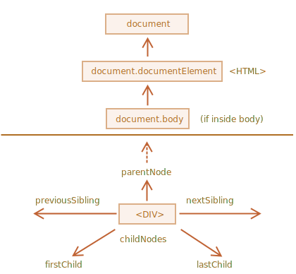
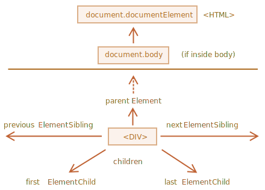
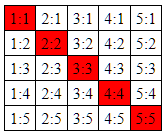

Le DOM nous permet de faire n’importe quoi avec les éléments et leur contenu, mais nous devons d’abord atteindre l’objet DOM correspondant.
Toutes les opérations sur le DOM commencent par l’objet document. C’est le “point d’entrée” principal du DOM. De là, nous pouvons accéder à n’importe quel nœud. Voici une image des liens qui permettent de voyager entre les nœuds DOM :
Les nœuds supérieurs de l’arbre sont disponibles directement en tant que propriétés de document :
Il y a un hic : document.body peut être null
Un script ne peut pas accéder à un élément qui n’existe pas au moment de l’exécution.
En particulier, si un script se trouve dans <head>, alors document.body n’est pas disponible, car le navigateur ne l’a pas encore lu.
Dans le monde du DOM, la valeur null signifie “n’existe pas” ou “pas ce genre de nœud”.
Nous utiliserons désormais deux termes :
<html>
<body>
<div>Begin</div>
<ul>
<li><b>Information</b></li>
</ul>
</body>
</html>
Par exemple, ici <body> a des enfants <div> et <ul> (et quelques nœuds texte vides) :
… Et les descendants de <body> ne sont pas seulement des enfants directs <div>, <ul> mais aussi des éléments plus profondément imbriqués, tels que <li> (un enfant de <ul> ) et <b> (un enfant de <li>) – c'est le sous-arbre entier.
L’exemple ci-dessous montre des enfants de document.body :
<html>
<body>
<div>Begin</div>
<ul>
<li>Information</li>
</ul>
<div>End</div>
<script>
for (let i = 0; i < document.body.childNodes.length; i++) {
document.write( document.body.childNodes[i] ); // Text, DIV, Text, UL, ..., SCRIPT, Text
}
</script>
<p>...more stuff...</p>
</body>
</html>
Vérifier l'affichage de ce code
Veuillez noter un détail intéressant ici. Si nous exécutons l’exemple ci-dessus, le dernier élément affiché est un objet Text (la chaîne des éléments affichés). En fait, le document contient plus de choses en dessous (paragraphe), mais au moment de l’exécution du script, le navigateur ne l’a pas encore lu, donc le script ne le voit pas.
Ce ne sont que des raccourcis. S’il existe des nœuds enfants, ce qui suit est toujours vrai :
elem.childNodes[0] === elem.firstChild
elem.childNodes[elem.childNodes.length - 1] === elem.lastChild
Il y a aussi une fonction spéciale elem.hasChildNodes() pour vérifier s’il y a des nœuds enfants.
Comme nous pouvons le voir, childNodes ressemble à un tableau. Mais en réalité ce n’est pas un tableau, mais plutôt une * collection * – un objet itérable spécial semblable à un tableau.
Il y a deux conséquences importantes :
1. Nous pouvons utiliser for..of pour itérer dessus :
for (let node of document.body.childNodes) {
alert(node); // affiche tous les nœuds enfants de la collection
}
C’est parce qu’il est itérable.
2. Les méthodes de tableau ne fonctionneront pas, car ce n’est pas un tableau :
alert(document.body.childNodes.filter); // undefined (there's no filter method!)
alert( Array.from(document.body.childNodes).filter ); // function
La première chose est sympa. La seconde est tolérable, car nous pouvons utiliser Array.from pour créer un “vrai” tableau à partir de la collection, si nous voulons des méthodes de tableau :
Les collections DOM sont en lecture seule
Les collections DOM, et plus encore – toutes les propriétés de navigation répertoriées dans ce chapitre sont en lecture seule.
Nous ne pouvons pas remplacer un enfant par autre chose en attribuant childNodes[i] = ....
Changer le DOM nécessite d’autres méthodes. Nous les verrons dans le prochain chapitre.
Les collections DOM sont live
Presque toutes les collections DOM avec des exceptions mineures sont live. En d’autres termes, elles reflètent l’état actuel du DOM. Si nous gardons une référence à element.childNodes, et ajoutons/supprimons des nœuds dans le DOM, alors ils apparaissent automatiquement dans la collection.
N’utilisez pas for..in pour parcourir les collections
Les collections sont itérables en utilisant for..of. Parfois, les gens essaient d’utiliser for..in.
À ne pas faire. La boucle for..in parcourt toutes les propriétés énumérables. Et les collections ont des propriétés “supplémentaires”
rarement utilisées que nous ne voulons généralement pas obtenir.
Les frères et sœurs sont des nœuds qui sont les enfants du même parent. Par exemple, ici <head> et <body> sont des frères et sœurs :
<html>
<head></head>
<body></body>
</html>
<body> est dit être le frère “suivant” de <head>,
<head> est dit être le frère “précédent” de <body>.
Le frère suivant est dans la propriété nextSibling, et le précédent – dans previousSibling.
Le parent est disponible en tant que parentNode.
// le parent de <body> est <html>
alert( document.body.parentNode === document.documentElement ); // true
// après <head> vient <body>
alert( document.head.nextSibling ); // HTMLBodyElement
// avant <body> vient <head>
alert( document.body.previousSibling ); // HTMLHeadElement
Les propriétés de navigation répertoriées ci-dessus font référence à tous les nœuds. Par exemple, dans childNodes, nous pouvons voir à la fois les nœuds texte, les nœuds élément et même les nœuds commentaire s’il en existe.
Mais pour de nombreuses tâches, nous ne voulons pas de nœuds texte ou commentaire. Nous voulons manipuler des nœuds élément qui représentent des balises et forment la structure de la page.
Voyons donc plus de liens de navigation qui ne prennent en compte que les nœuds élément :
Les liens sont similaires à ceux donnés ci-dessus, juste avec le mot Element à l’intérieur :
Pourquoi parentElement ? Le parent peut-il ne pas être un élément ?
La propriété parentElement renvoie l’élément parent, tandis que parentNode retourne le parent “peu importe le nœud”. Ces propriétés sont généralement les mêmes : elles obtiennent toutes deux le parent.
À la seule exception de document.documentElement (la balise HTML) :
alert( document.documentElement.parentNode ); // document
alert( document.documentElement.parentElement ); // null
La raison en est que le nœud racine document.documentElement (<html>) à la balise document comme parent. Mais document n’est pas un nœud élément, donc parentNode le renvoie et pas parentElement.
Ce détail peut être utile lorsque nous voulons passer d’un élément arbitraire elem à <html>, mais pas au document :
while(elem = elem.parentElement) { // remonter jusqu'à
alert( elem );
}
Jusqu’à présent, nous avons décrit les propriétés de navigation de base.
Certains types d’éléments DOM peuvent fournir des propriétés supplémentaires, spécifiques à leur type, pour plus de commodité.
Les tableaux en sont un excellent exemple et représentent un cas particulièrement important :
L’élément <table> supporte (en plus de ce qui précède) les propriétés suivantes:
<thead>, <tfoot>, <tbody> les éléments fournissent la propriété rows :
Les éléments <tr> ont également des propriétés spéciales :
Ainsi que <td> et <th> :
Regardez cette page :
<html>
<body>
<div>Users:</div>
<ul>
<li>John</li>
<li>Pete</li>
</ul>
</body>
</html>
Pour chacun des éléments suivants, donnez au moins un moyen d’y accéder :
Il existe plusieurs façons :)
Question : Si element – est un nœud de type élément arbitraire du DOM …
1. Est-il vrai que elem.lastChild.nextSiblingb> est toujours égal à null ?
2. Est-il vrai que elem.children[0].previousSibling est toujours égal à null ?
Qu'en pensez-vous ? :)
Écrivez le code pour colorer toutes les cellules du tableau diagonal en rouge.
Vous devrez obtenir toutes les diagonales <td> de la <table> et les colorer en utilisant le code :
// colorer en rouge
td.style.backgroundColor = 'red';
Le résultat devrait être :
Nous utiliserons les propriétés rows et cells pour accéder aux cellules du tableau en diagonale.